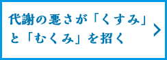
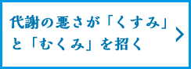

生活習慣を変えていないのに、年齢とともに体が重く感じたり、むくんだり、くすみを感じる、という人も多いのでは？原因の一つに、｢基礎代謝の低下｣が考えられます。よどみのない美しさを保つために｢めぐり｣を意識しましょう。
年齢とともに低下する基礎代謝
私たちの体は、体に取り込んだ食物や酸素をエネルギーに換えて、体を動かしています。基礎代謝とは、呼吸や体温調節、内臓を動かすなど、生命を維持するために最低限必要なエネルギーのこと。1日寝ているだけでもおなかがすくのは、基礎代謝によってエネルギーが消費されるためです。ただし、年齢とともに基礎代謝は低下していきます。
基礎代謝の低下がめぐりを悪くする
基礎代謝が低下した体は、血液やリンパの流れ（めぐり）が悪くなります。すると、体内に酸素や栄養がいきわたりにくくなり、水分や老廃物が蓄積。疲れやすくなったり、むくんだり、体の調子が悪くなります。血行不良は「冷え」も招くため、放っておくと体温が低下。さらに基礎代謝が低下する悪循環に陥ります。
また、血液のめぐりは脳や内臓が優先され、肌に栄養が届くのは一番最後。基礎代謝の低下は、体だけでなく肌にも及びます。
基礎代謝が低下してめぐりが悪くなった肌は、血色が悪くなって、くすんでみえます。とくに、皮膚が薄い目もとは、青っぽいクマが現れやすくなります。また、細胞に栄養が届きにくくなるため、肌の新陳代謝（細胞の生まれ変わり）も遅れがちに。肌の老廃物である不要な角質やメラニン色素が蓄積しやすくなり、角質くすみや茶ぐすみを引き起こします。
顔のむくみは、皮膚の下に余分な水分が溜まることで起こります。アルコールや塩分の過剰摂取が主な原因ですが、思い当たらない場合は、基礎代謝の低下による「めぐりの悪化」を疑ってみましょう。顔がむくむと目が小さくみえ、顔が大きい印象や太った印象を与えます。また、めぐりの悪化で老廃物が溜まると、吹出物や肌あれの原因にもなります。
肌や体の調子を整えるには、1日の中でもっとも基礎代謝が上がる「朝」の活動がカギに！
次のページで、代謝アップをさらに後押しする秘訣をご紹介します。
※ドクターによる監修は一般論に関してのみとなり、このページは広告ではありません。
また、他のページにおいても、ドクターが掲載商品や特定商品への保証や購入等を推薦するものではありません。


-


血行不良が肌老化の原因！？
血行不良は、細胞に栄養が行きわたらなくなり肌老化を招きます。 -

代謝をあげて肌本来の美しさを！
代謝をあげると、健康だけでなくお肌にも良い影響を及ぼします。 -

シワシミ対策の鍵！からだの奥のめぐり
めぐりとは、不要なものを排出し、必要なものを行き渡らせること。 -


「めぐりの結晶」口コミ
「めぐりの結晶」に寄せられたお客様のリアルな投稿をご紹介。 -

「めぐりの結晶」インタビュー
くすみがちだったんですが、なんだか明るくなりました！ -

「めぐりの結晶」インタビュー倉増様
気になっていたところが、目立たなく！ -


cafeglobe×めぐりの結晶
スーパーフルーツがあれば、いくつになってもキレイは続く！ -

MY LOHAS×めぐりの結晶
よどみのない人になる。「美人印象」を生むインドの果実とは？ -

自然の中にある、めぐる食材とは？
お肌は毎日の積み重ね。食材、簡単レシピをご紹介。